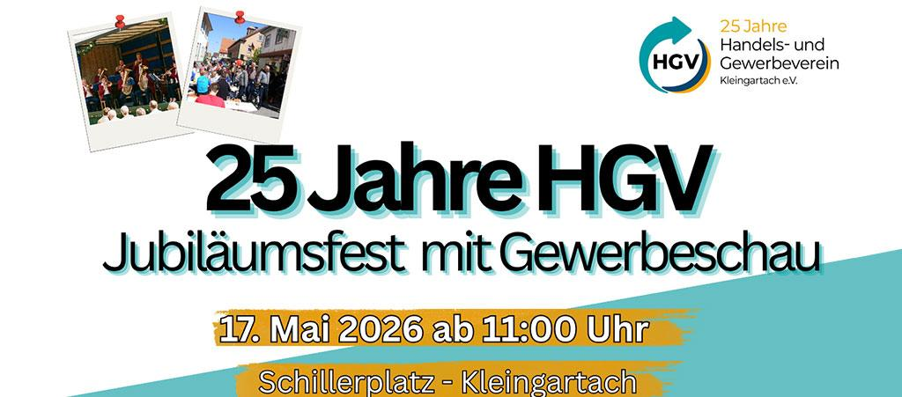
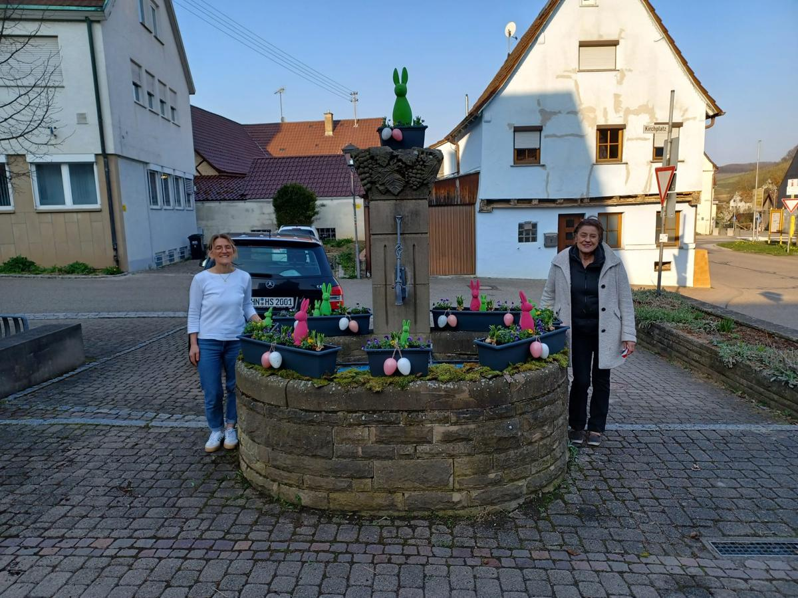
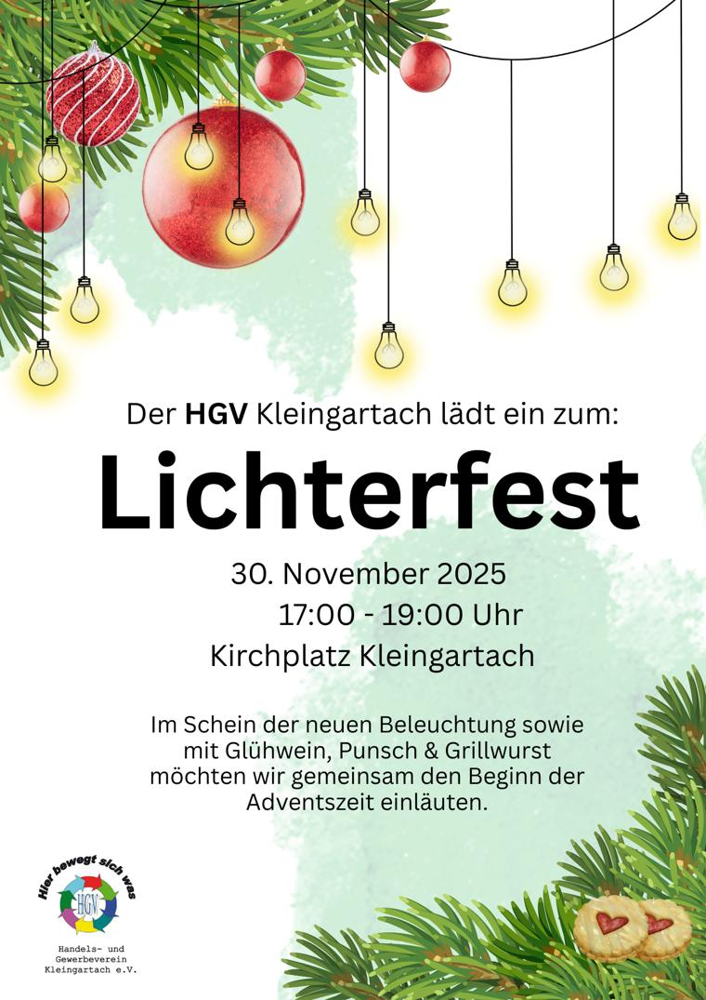
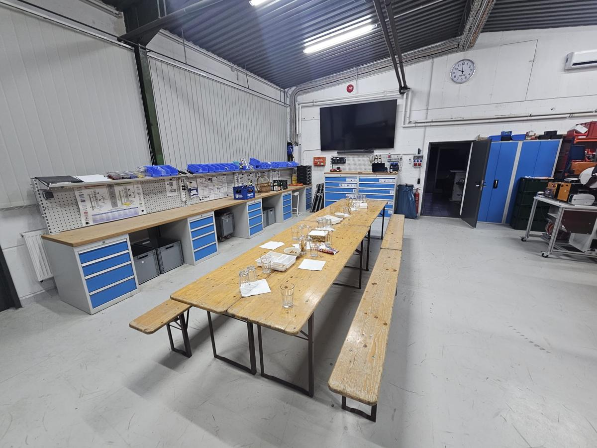

25 Jahre HGV: die Vorbereitungen laufen
Jubiläumsfest mit Gewerbeschau am 17. Mai 2026 auf dem Schillerplatz. Viele Aussteller haben bereits zugesagt.

Jubiläumsfest mit Gewerbeschau am 17. Mai 2026 auf dem Schillerplatz. Viele Aussteller haben bereits zugesagt.

Am 18. März haben Helferinnen des HGV den Dorfbrunnen mit bunten Eiern und frischem Grün geschmückt.

Rund 5.000 Lichter am Baum, ein Adventskranz um den Brunnen und viele Gäste am 1. Advent.

Am 1. Advent von 17 bis 19 Uhr auf dem Kirchplatz, mit Glühwein, Punsch und Grillwurst.

Zweiter Abend der Reihe „Zu Gast bei“: 16 Mitglieder und Partner besuchten FM Systeme in Eppingen.

Auftakt der neuen Besuchsreihe am 9. Juli 2025 mit Geschäftsführer Florian Faber.
Der Handels- und Gewerbeverein Kleingartach e. V. feiert sein 25-jähriges Bestehen. Das Jubiläumsfest mit Gewerbeschau findet am 17. Mai 2026 ab 11 Uhr auf dem Schillerplatz in Kleingartach statt.
Die Mitglieder werben für das Fest, sprechen Aussteller an, kümmern sich um Anmeldungen und bringen Ideen ein. Viele Aussteller haben bereits zugesagt, die Gewerbeschau füllt sich.
Geplant sind Grußworte von MdB Alexander Throm, MdL Michael Preusch, Oberbürgermeister Klaus Holaschke und Ortsvorsteher Andreas Oechsner. Musik gibt es den ganzen Tag, Höhepunkt ist der Auftritt von Christian Engel. Für Kinder gibt es Töpfern, einen Kettcar-Parcours und Kistenstapeln, die Feuerwehr zeigt Vorführungen.
Aus einem Hubsteiger sehen Sie Kleingartach aus rund 25 Metern Höhe. Dazu gibt es regionales Essen und Trinken. Das Fest ist ein gemeinsames Projekt vieler Beteiligter.
Am 18. März haben Helferinnen und Helfer des HGV Kleingartach den Brunnen am Kirchplatz für Ostern geschmückt: mit bunten Ostereiern, frischem Grün und österlichen Elementen.
Der Brunnen steht für den Frühling und für das Engagement im Ort. Der HGV dankt den „Deko-Queens“ Aferdita Bytyci und Manuela Sauer für ihre Kreativität und ihren Einsatz.
Die Tradition verschönert Kleingartach jedes Jahr aufs Neue. Der Verein wünscht allen frohe Ostern.

In der Woche vor dem 1. Advent hat der HGV die Weihnachtsbeleuchtung am Kirchplatz aufgebaut. Am 26. November kamen rund 5.000 Lichter an den Baum. Er stammt aus dem Garten von Norbert Rembold, der Bauhof hat ihn gefällt und aufgestellt. Florian Faber und das Team der Faber Service GmbH & Co. KG halfen mit dem Hubsteiger.
Um den Brunnen wurde aus Zweigen ein Adventskranz gebunden und mit Kugeln und Zapfen in Gold und Rot geschmückt. Die Dekoration übernahmen Manuela Sauer und Aferdita Bytyci mit Unterstützung von Monika Faber.
Am 30. November, dem 1. Advent, wurde die neue Beleuchtung beim Lichterfest unter dem Zelt eingeweiht. Trotz drohendem Regen kamen viele Gäste. Die Würste lieferte die Metzgerei Reinwald, die Brötchen die Bäckerei Keppler, die Getränke Getränke Hees und den Glühwein die Heuchelberger Weingärtner.
Der HGV dankt allen Helfern und Gästen und wünscht eine friedliche Adventszeit.
Der HGV Kleingartach lädt alle Bewohnerinnen und Bewohner zum Lichterfest ein: am Sonntag, 30. November 2025, von 17 bis 19 Uhr auf dem Kirchplatz Kleingartach.
Im Schein der neuen Beleuchtung an Weihnachtsbaum und Brunnen gibt es Glühwein, Punsch und Grillwurst. Gemeinsam wird der Beginn der Adventszeit eingeläutet.
Am Mittwoch, 5. November 2025, fand der zweite Abend der neuen Reihe „Zu Gast bei“ statt. 16 Teilnehmerinnen und Teilnehmer, darunter Partner von Mitgliedern, besuchten die FM Systeme GmbH in Eppingen.
Katrin Schmalzhofer-Rathke begrüßte die Gruppe gegen 18:30 Uhr. Firmengründer Rainer Schmalzhofer erzählte die Geschichte des Familienbetriebs von den Anfängen im Privathaus bis heute.
Im Showroom zeigte das Unternehmen Profiltechnik, Arbeitsplatzsysteme und individuelle Lean-Lösungen. Danach ging es durch die Produktionshalle, eine Bilderchronik zeigte die Entwicklung über die Jahre. Der Abend klang bei Snacks und Getränken aus.
Am Mittwoch, 9. Juli 2025, startete die neue Besuchsreihe „Zu Gast bei“. Die Faber Service GmbH & Co. KG öffnete ihre Türen für Mitglieder des HGV und ihre Gäste.
Geschäftsführer Florian Faber stellte das Leistungsspektrum vor: Photovoltaikanlagen für Privat und Gewerbe, automatisierte Hochregallager, Fördertechnik, Industrieanlagen sowie Wartung und technischen Service.
Die Reihe soll den Zusammenhalt im Verein stärken und den Austausch zwischen den Mitgliedsbetrieben fördern. Der gut besuchte Abend war ein gelungener Auftakt.